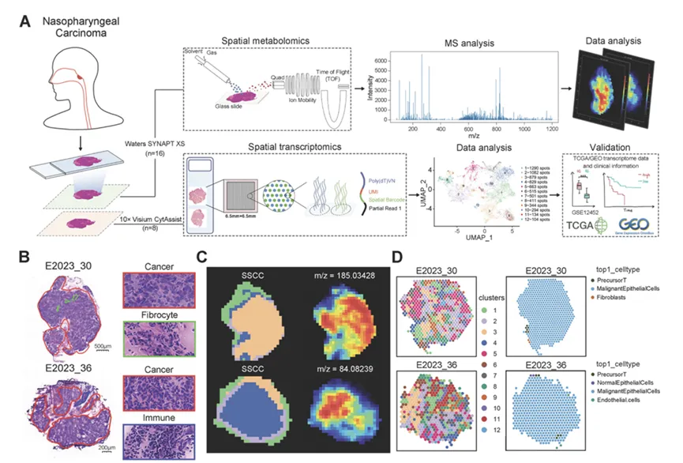
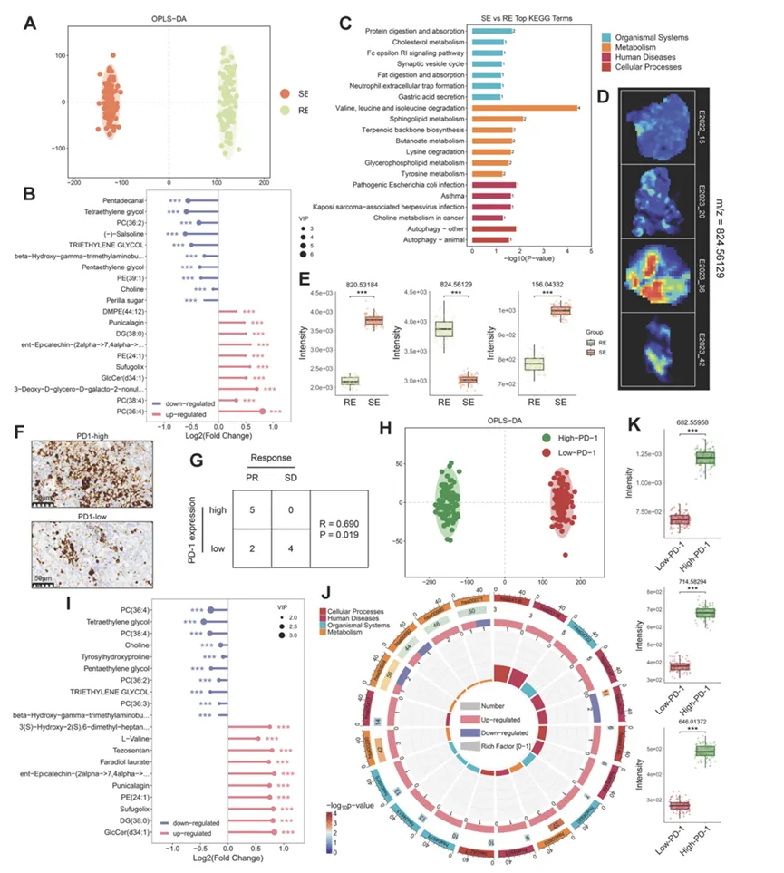
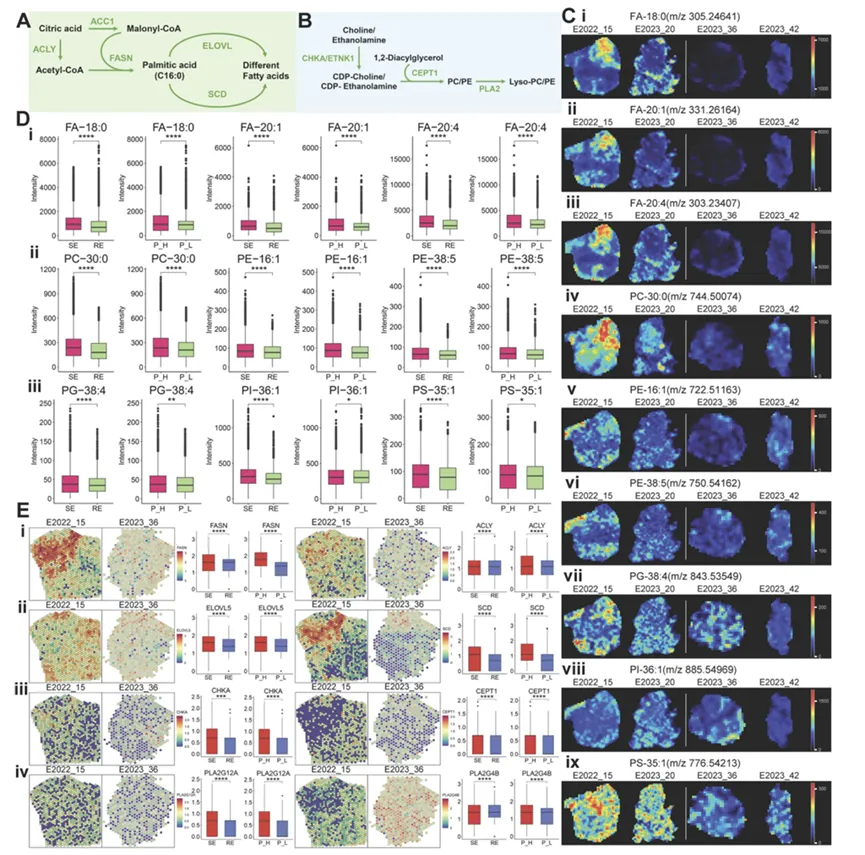
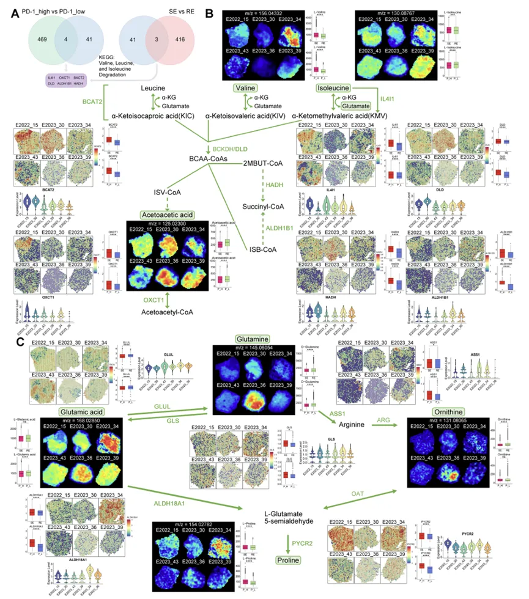
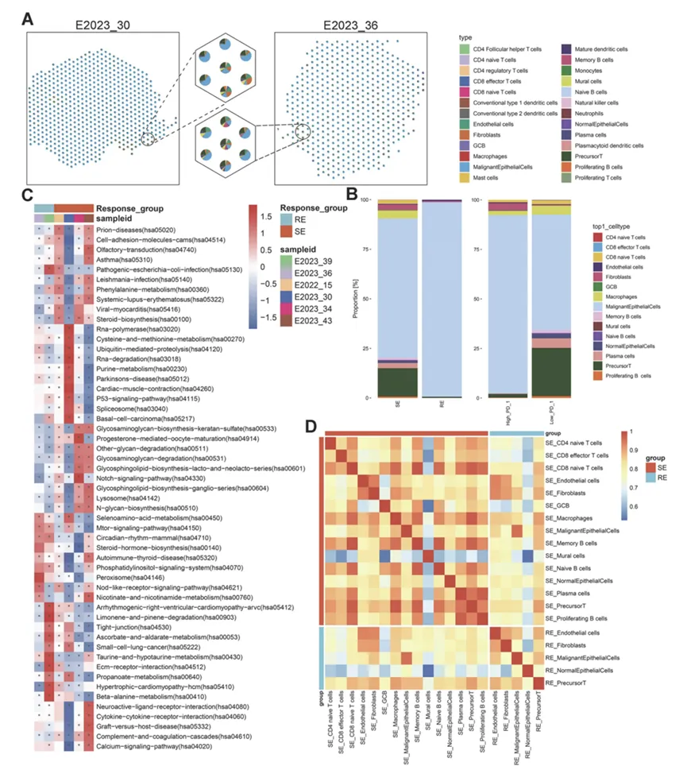
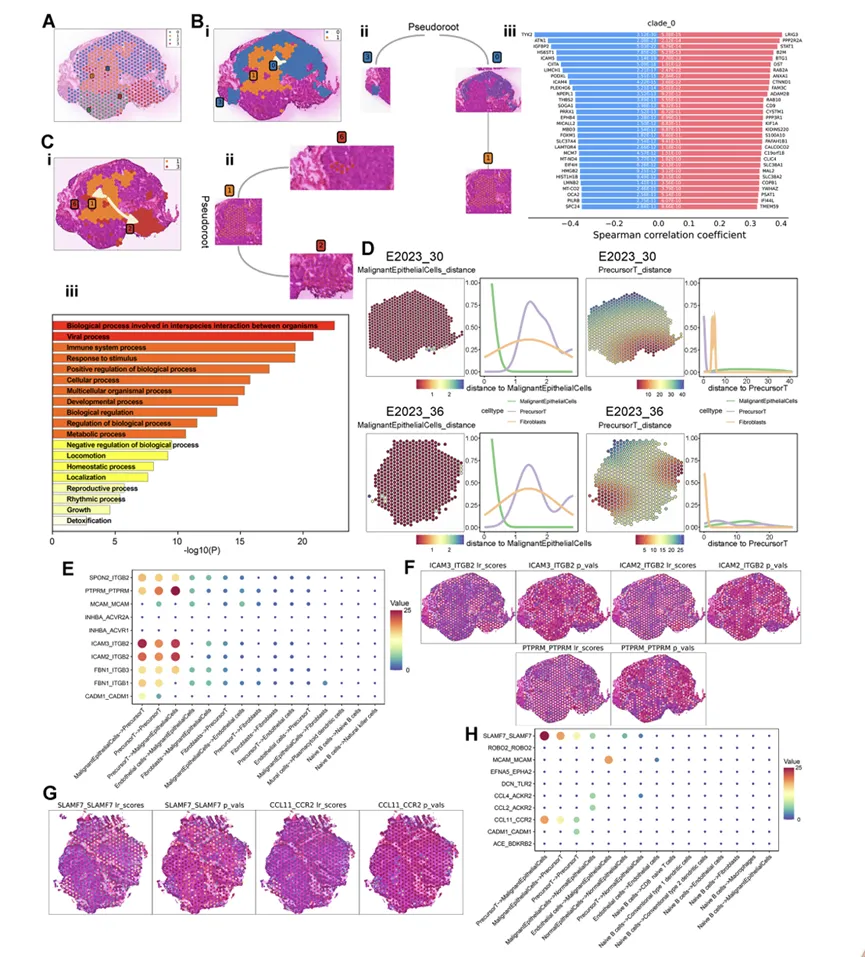
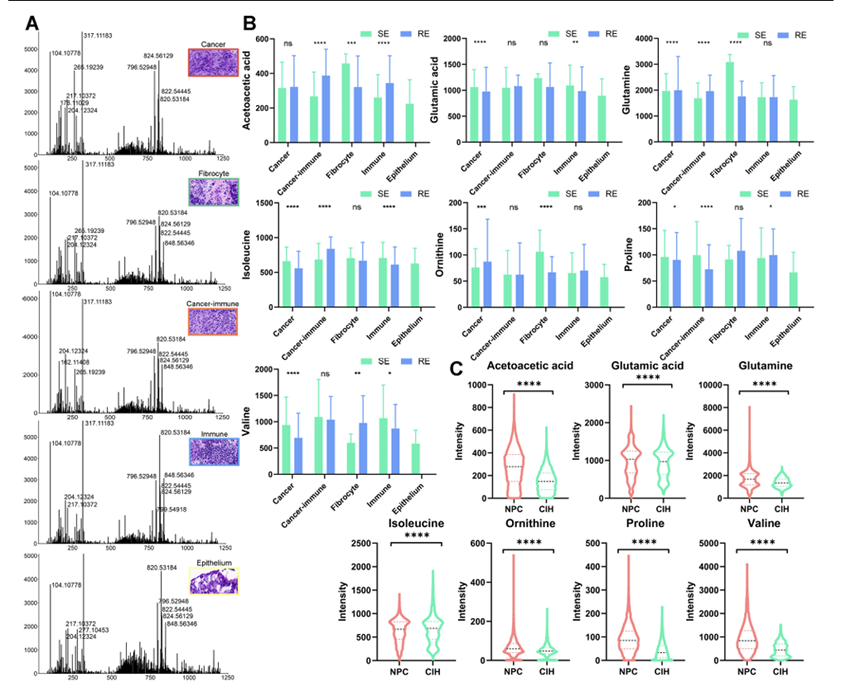
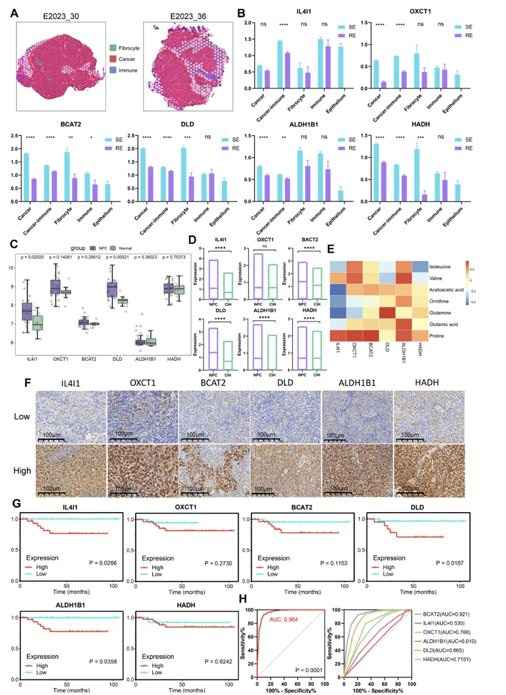
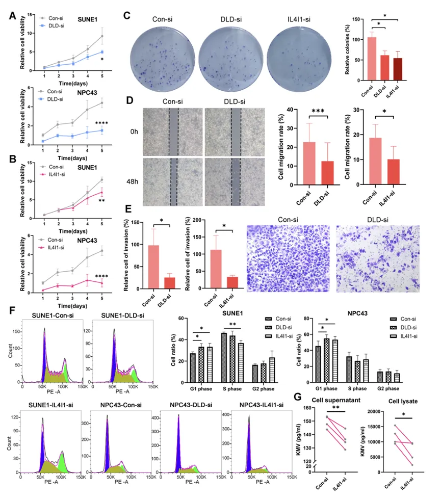

代谢重编程怎么利用空间代谢组学和转录组学揭示高PD-1 表达及治疗反应的鼻咽癌中的细胞互作
原文：https://mp.weixin.qq.com/s?__biz=MzAwMzIzOTk5OQ==&mid=2247538070&idx=1&sn=0674ff3077daf94e4f896e94f36ddf69&chksm=9b3c2cc6ac4ba5d023542503b683cb33ee437b4d33fe4f68155ef52e2b50b4917e589dfbf7a4#rd 合集：文献速递
一、写在前面
本次分享的是发布于《Theranostics》（IF=13.3）的文章，感兴趣的同学可以看看原文：" Spatial Metabolomics and Transcriptomics Reveal Metabolic Reprogramming and Cellular Interactions in Nasopharyngeal Carcinoma with High PD-1 Expression and Therapeutic Response"
鼻咽癌是一种常见的头颈部肿瘤，特别是在中国南方。虽然放疗和化疗是主要治疗方法，但很多病人会出现耐药和复发。近年来，免疫治疗（如PD-1抑制剂）为部分病人带来了希望，但总体响应率还是不理想。
研究表明，肿瘤内部的环境（肿瘤微环境）非常复杂，其中癌细胞的代谢重编程（即它们如何利用营养物质如脂肪和氨基酸）和免疫细胞的功能，是影响治疗效果的关键。但是，传统的研究方法会把整个肿瘤组织磨碎来分析，这样我们就看不到不同细胞在肿瘤里具体哪个位置、以及它们之间是如何相互作用的。
最近，出现了两种新技术：空间转录组（可以看基因在组织原位的表达位置）和空间代谢组（可以看小分子代谢物在组织原位的分布）。这篇研究的目的，就是联合使用这两种新技术，在鼻咽癌组织切片上，直接观察基因表达、代谢物分布和细胞位置，希望能找到影响治疗反应和PD-1表达的关键分子和细胞互动模式。
如果需要数据分析指导 、生信热点全文复现 、自测数据个性化分析 辅导、常态化实验学习，欢迎联系客服微信[Biomamba_zhushou]
二、主要内容
1：鼻咽癌的空间图谱。

通过染色和新技术，他们成功把肿瘤组织分成了不同的区域（比如肿瘤区、免疫细胞区），并且看到了代谢物和基因在不同地方的分布是不一样的。
2：发现不同疗效病人的代谢物不同。

通过比较敏感和耐药病人的组织，他们找到了很多有差异的代谢物，这些代谢物主要和支链氨基酸（BCAA）降解和脂代谢有关。
3：重点关注了脂代谢。

他们发现，对治疗敏感的病人，他们的肿瘤组织里合成脂肪酸和磷脂的相关基因和代谢物更活跃，水平更高
4：重点关注了氨基酸代谢。

找到了6个关键基因（IL4I1, OXCT1, BCAT2, DLD, ALDH1B1, HADH），这些基因在敏感病人中更活跃，它们参与支链氨基酸和谷氨酰胺的代谢。
5：分析了肿瘤里都有哪些细胞。

治疗敏感的病人肿瘤里，一种叫“前体T细胞”的免疫细胞和巨噬细胞更多。而且这些敏感区域的细胞活动更偏向某些代谢通路。
6：细胞之间怎么交流。

在敏感病人里，癌细胞和“前体T细胞”靠得更近，并且通过一些特定的分子对（比如ICAM3-ITGB2）在“对话”。这种空间上的近距离交流可能对好的治疗效果很重要。
7+8：验证了这些发现的临床意义。


他们把前面找到的6个关键基因放到更大的数据库和病人样本里去验证，证实这些基因在肿瘤里确实高表达，而且高表达这些基因的病人，生存期更短，预后更差。他们还用这6个基因建了一个模型，这个模型能很好地预测病人会不会耐药。
9：做了功能实验验证基因的作用。

他们在实验室的鼻咽癌细胞里，把DLD和IL4I1这两个基因“敲低”（让它们不表达），结果发现癌细胞的生长、迁移和侵袭能力都变差了。这证明这两个基因对癌细胞的恶性行为确实很重要。
三、总结与展望
总结
这项研究利用空间转录组和空间代谢组技术，发现鼻咽癌的治疗效果与肿瘤微环境中的代谢状态有关。对治疗敏感的病人，其肿瘤的支链氨基酸代谢、谷氨酰胺代谢和脂质代谢更活跃。同时，敏感病人的肿瘤里前体T细胞更多，并且它们与癌细胞有更密切的空间互动。研究还找到了6个关键基因（IL4I1, OXCT1, BCAT2, DLD, ALDH1B1, HADH），它们不仅参与这些代谢，还能很好地预测病人的治疗效果和预后
创新与意义
1. 这是首次在鼻咽癌中同时使用空间转录组和空间代谢组，能直接在原位上看到分子分布和细胞相互作用。
2. 不仅找到了新的代谢相关基因，还发现了前体T细胞的空间位置与疗效的相关性，这是一个比较新的发现。
3. 筛选出的6个基因组合有潜力成为预测鼻咽癌治疗反应的生物标志物，对临床有应用价值。
局限与未来方向
1. 研究的病人样本数量还可以再增加一些，让结论更可靠。
2. 这篇研究主要发现了现象和关联，但这些关键基因具体是通过什么信号通路来影响耐药和免疫的，还需要后续更深入的实验来探索。
3. 未来可以研究针对这些基因的靶向药物，看它们是否能和现有的化疗、免疫治疗联合使用，提高疗效。

如何联系我们

 留一个领取资料、开箱即用的单细胞分析镜像的微信号[Biomamba_zhushou]，方便各位随时交流。同时我们也构建了交流群矩阵，欢迎大家入群讨论。
大家可以阅读完这几篇之后添加给生信入门初学者的小贴士
没有检索，就没有发言权
留一个领取资料、开箱即用的单细胞分析镜像的微信号[Biomamba_zhushou]，方便各位随时交流。同时我们也构建了交流群矩阵，欢迎大家入群讨论。
大家可以阅读完这几篇之后添加给生信入门初学者的小贴士
没有检索，就没有发言权
已有生信基地联系方式的同学无需重复添加

 您点的每个赞和在看，我都认真当成了喜欢
您点的每个赞和在看，我都认真当成了喜欢